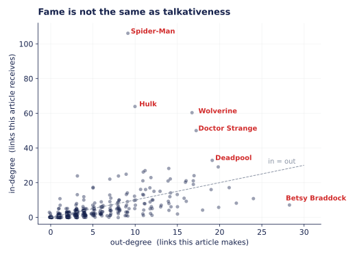
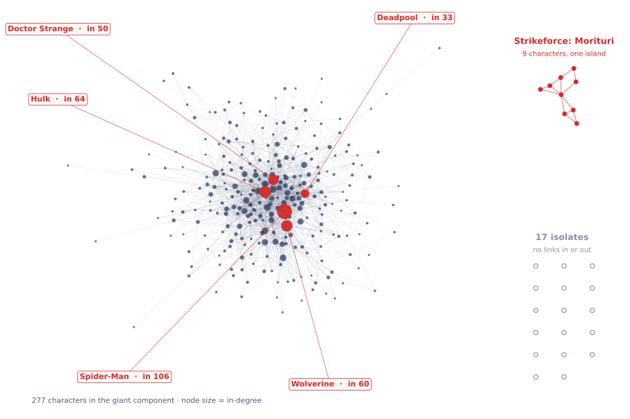
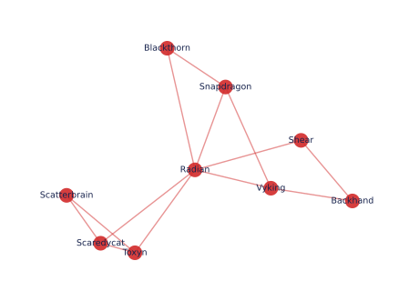

Our first pass at the Marvel link network: 303 characters, 1,784 arrows, and one small island of nine heroes nobody in the main universe has ever mentioned.
What this page is
The course handed us a frozen network and a set of week-1 tools. This post is what we got when we pointed the second at the first.
We start by describing the network and being explicit about what somebody decided a node and an edge would be, because that decision is doing more work than anything we compute afterwards. Then the procedure: how we loaded it and how we checked the load. Then the substance — four degree distributions, a look at who the hubs are and why in-degree and out-degree pick out completely different characters, a drawing of the whole thing, and finally the components, which turned out to be the most interesting part of the week.
Every number below came out of our own notebook. Where the course page publishes the same number, we say so, because agreeing with a known answer is the only cheap way we have to tell whether our pipeline is right.
Overview
The nodes are the 303 characters in Wikipedia's Category:Marvel Comics superheroes. There is an edge from A to B when the running text of A's article links to B's article. That gives a directed, unweighted, simple network — an arrow one way says nothing at all about the other way.
Two decisions in the snapshot are worth stating out loud. Edges were harvested from article text rather than from Wikipedia's link index, which throws away the links contributed by shared navigation boxes; had they been kept, every Avenger would be adjacent to every other Avenger by templating artefact rather than because anyone's article mentions anyone. And redirects were resolved at both ends, so a link to Spidey and a link to Spider-Man land on the same node. Different choices would have produced a genuinely different network, and most of what follows would change with them.
| Quantity | Value |
|---|---|
| Nodes n | 303 |
| Directed edges | 1,784 |
| Undirected pairs m | 1,434 |
| Reciprocated pairs | 350 |
| Average degree ⟨k⟩ = 2m/n | 9.47 |
| Average in- = out-degree | 5.89 |
| Density 2m/[n(n−1)] | 3.1% |
| Connected components | 19 |
| Giant component | 277 |
| Isolates | 17 |
The density is the number to sit with. Of the 45,753 pairs of characters that could be connected, 1,434 are — about 3%. That is dense as real networks go, and still means 97% of the possible links don't exist. Everything interesting is in which 3% made it.
Procedure
Loading a network is where the first silent mistake usually happens, so this is the one step we were careful about. Building the graph from the edge list alone gives 286 nodes: 17 characters appear in neither column, and they vanish without an error message. We add the full node roster first.
nodes = pd.read_csv("week1_nodes.tsv", sep="\t", comment="#", quoting=3)
edges = pd.read_csv("week1_edges.tsv", sep="\t", comment="#",
names=["source", "target"])
G = nx.DiGraph()
G.add_nodes_from(nodes.node_id) # all 303 first
G.add_edges_from(edges.itertuples(index=False))
Then we checked the load against numbers the course publishes independently: 303 nodes and 1,784 directed edges, collapsing to 1,434 undirected pairs, ⟨k⟩ ≈ 9.47, density ≈ 3.1%, one component of 277, 17 isolates. All six matched. The two edge counts differ because 350 pairs link in both directions; each of those is two arrows but only one pair, and 1,784 − 350 = 1,434.
Everything after that is degree bookkeeping and plotting, which the agent wrote and we read. The one place we made it show its work was the binning scheme, where the normalisation is easy to get wrong and the error looks like a result rather than a bug. Our check: where the bins are width 1, the binned curve has to sit exactly on the raw points. It does, to machine precision. If it hadn't, the culprit would almost certainly have been dividing by the wrong width.
Degree distributions
A single degree is a number; all of them together is the portrait. We want to know whether this network has the heavy tail that turns up everywhere in network science, and whether the answer differs for links received and links made. So: in-degree and out-degree, each on linear and on log–log axes. All four plot k+1 rather than k, because a log axis cannot show zero and 17 characters have no links at all — shifting keeps them in the picture instead of quietly deleting them.
Click any panel to turn it over for the detail.
The linear panels are almost useless, and that is the lesson rather than a complaint. Both look like a spike at the left and a flat line, because the rare high-degree nodes are exactly that — rare — and on a linear y-axis a probability of 1/303 is indistinguishable from zero. The information is there; the axes hide it.
On log–log the in-degree straightens out into something close to a line and keeps going to Spider-Man at k = 106. The out-degree does not get anywhere near that: the largest is Betsy Braddock's 28. The two curves have the same left-hand shape and completely different right-hand ends.
The binned overlay is worth reading carefully. Out in the tail every raw count is 0 or 1, so the raw dots turn into a scatter of points all sitting at the same height, P = 1/303, with invisible gaps between them where the count is zero. Binning averages over widening ranges and pulls a trend out of that. It did not invent the range — the extra reach was always in the data, it just could not be seen with one character per degree value and nobody at the neighbouring degrees. What binning does is make the emptiness countable instead of invisible.
The bit we checked by hand. Our bins are width 1 for k+1 up to 7, then doubling: [8,16), [16,32), [32,64), [64,128). Each bin's count is divided by its width so a wide bin doesn't look popular for being wide, and each is drawn at the geometric mean of the integers it covers rather than the arithmetic middle, which on a log axis would sit visibly right of centre.
The test is that the width-1 bins must reproduce the raw values exactly, since averaging one integer with itself is not an average. Ours agree to twelve decimal places. This is the sort of thing that would have shipped silently wrong: a plot with a broken normalisation still looks like a plot.
Hubs
If the two distributions have different shapes, the natural next question is whether they have different occupants. They do — almost entirely.
| Most linked to | in | out |
|---|---|---|
| Spider-Man | 106 | 9 |
| Hulk | 64 | 10 |
| Wolverine | 60 | 17 |
| Doctor Strange | 50 | 17 |
| Deadpool | 33 | 19 |
| Links out most | out | in |
|---|---|---|
| Betsy Braddock | 28 | 7 |
| Cloak and Dagger | 24 | 11 |
| Adam Warlock | 22 | 8 |
| Venom | 21 | 17 |
| She-Hulk | 20 | 29 |

The asymmetry comes from who is allowed to create each kind of edge. An in-link is conferred: it exists because the editors of some other article decided this character was worth mentioning. Nothing caps how many other articles can reach that decision, and the more famous a character already is, the more likely the next writer is to reach it. There are 302 other articles that could point at Spider-Man, and 106 of them do — more than a third of the category.
An out-link is authored: somebody has to sit down and write it into this specific page. That is bounded by how long the article is and how many other characters its plot actually touches. Even a very long, very connected article runs out of relevant names in the twenties. So in-degree measures something like renown, while out-degree measures something much more like article length and narrative entanglement.
The scatter makes the consequence visible. Spider-Man sits far above the diagonal — massively cited, barely citing. Betsy Braddock sits far to the right of it: her article works its way through most of the X-Men without many articles working their way back to her. The correlation between the two is only about 0.5, which is high enough that being connected in one direction helps in the other, and low enough that using one as a proxy for the other would be a mistake.
This is also why we would refuse to collapse the network to undirected for a question about importance. The undirected degree adds these two quantities together, and they are produced by two different mechanisms — it mixes a measure of fame with a measure of verbosity and reports the sum.
The drawing
Before measuring anything else we wanted to look at it. The giant component is drawn with a force-directed layout, which pulls connected nodes together and pushes everything else apart; node size is in-degree, and the five biggest hubs are marked.
The isolates and the small island are not laid out by the algorithm — a force layout has nothing to say about a node with no edges, so it would scatter them arbitrarily and invite you to read meaning into where they landed. We placed them deliberately instead. That grouping is our editorial decision, not a result.

Two things are honest here and one is not. The hubs really are central — that is the layout doing its job, and it agrees with the degree numbers we computed separately. The three-part split really is structural. But the middle is a hairball: 277 nodes and 1,400-odd edges at this size is past the point where you can trace an individual connection, and two nodes sitting next to each other in there may be neighbours, may be two hops apart, or may just have been pushed there by nodes you can't see. We would not conclude anything from proximity inside the blob that we hadn't also computed.
Components
The network breaks into 19 components: one of 277, one of 9, and seventeen of one. The 277 is unremarkable — most real networks have a giant component, and 91% is a normal share. The nine is the find of the week.

They are Radian, Blackthorn, Vyking, Snapdragon, Scatterbrain, Scaredycat, Toxyn, Backhand and Shear — the cast of Strikeforce: Morituri, a Marvel series that ran from 1986 to 1989. Three of them carry "(Morituri)" in the page title, which is what made us look them up.
The structural reason they are cut off is the interesting part: the series is set on Earth-1287, a continuity separate from the main Marvel universe, with an alien invasion and a superpower process that kills everyone who undergoes it within a year. Its characters never meet Spider-Man, so no mainstream article has any occasion to link them, and their own articles have nobody to link but each other. They are dense internally and invisible externally.
That is a satisfying result because the network structure came first. We did not know the series existed; we found a disconnected clique and went and asked why, and the answer was a real editorial fact about the source material. A component boundary here is a continuity boundary.
The isolates are a different story, and reading their names makes the pattern obvious: Baymax, Super Rabbit, Breeze Barton, Solarman, Happy Sam Sawyer, Miracleman, Captain Midlands, Bird-Brain, Illuminator, Yo-Yo Rodriguez, Father Time, Charcoal, Black Fox, Brain Drain, Ogre, Hellfire, Sean and Chris.
Most are obscure, several are from the 1940s Timely Comics era, one is from a film rather than the comics, and one — Miracleman — is a British character Marvel acquired decades after his creation. What they share is not being unpopular; Baymax was in a hit animated film. It is that they are unconnected within this category. Baymax's article surely links to plenty of Wikipedia pages, just not to any of the other 302 superheroes here.
Which is the point about representation. An isolate in this network is not a character nobody cares about. It is a character whose links all leave the boundary we drew. Change the boundary — add Marvel films, or villains, or teams — and most of these 17 would stop being isolates immediately. The zero is a property of our node set, not of the character.
A number that surprised us. 58 characters have in-degree zero but only 20 have out-degree zero. So there are far more characters nobody mentions than characters who mention nobody — which fits the story above: writing an article almost forces you to link somewhere, while being linked to requires someone else to bother.
Wrapping up
The thing we keep coming back to is that the sharpest result this week came from the smallest structure. The degree distribution told us the network is heavy-tailed, which is true of nearly every network anyone has ever measured and therefore not very surprising. The nine-node island told us something specific about how Wikipedia's editors treat a discontinued 1980s series, and we would never have gone looking for it.
Open questions we're taking into week 2: whether that in-degree tail survives being tested properly rather than eyeballed off a log–log plot, and whether the hub ranking is really about fame or partly about article age — the characters at the top have all had Wikipedia articles for twenty years, and an old article has had longer to collect in-links from every article written since.